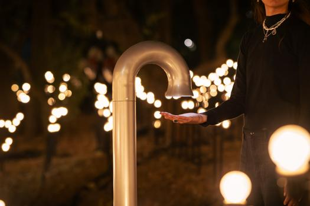
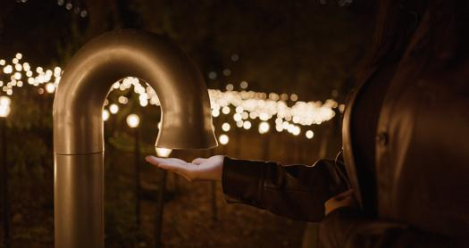
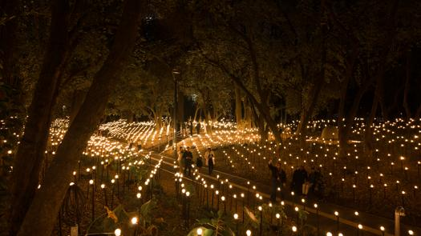
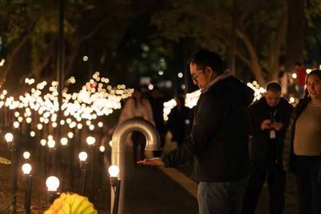
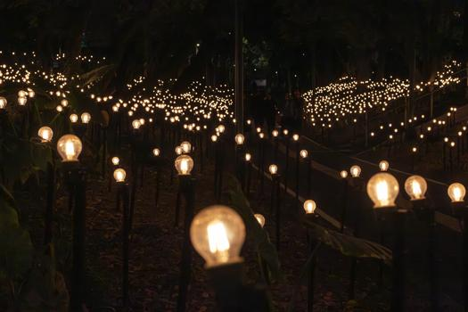
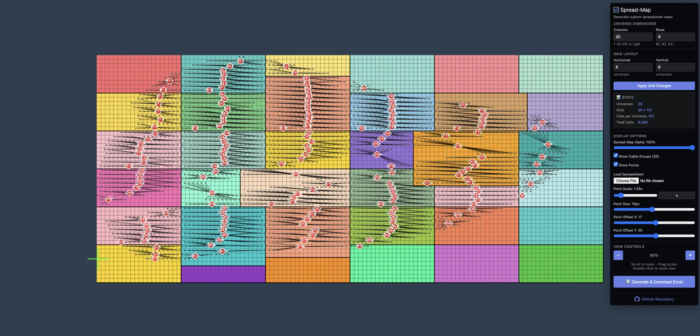
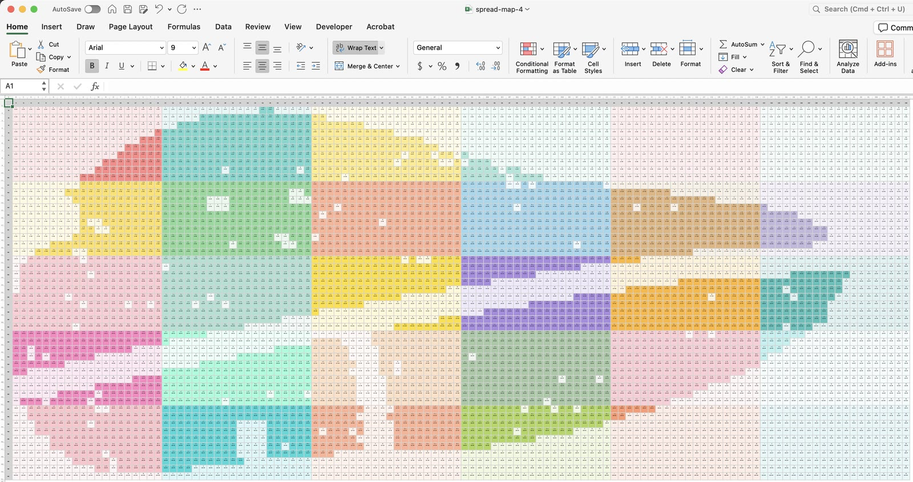

Pulse Garden, 2026
| 👤for | Rafael Lozano-Hemmer |
|---|---|
| #Year | 2026 |
| 🔗Official Site | lozano-hemmer.com/pulse_garden.php |
| 📋I did | Software Hardware |
“Pulse Garden” is an interactive installation composed of four thousand LED-filament polycarbonate light bulbs, each of which glimmers to the rhythm of the pulse of a different previous participant. Located in the “valley” of the Museum of Modern Art’s Sculpture Garden, the work records visitors’ heartbeats using optical pulse sensors (PPG) distributed throughout the space. Each new pulse recording is looped and replaces the oldest one, generating a continuously evolving choreography of light. The installation also reproduces the sound of each heartbeat, creating an intimate and complex soundscape. As visitors move through the installation, they encounter a biometric concert composed of the pulse recordings of the last four thousand participants.
Source code and documentation: github.com/stephanschulz/spread-map







Acknowledgment
This artwork by Rafael Lozano-Hemmer is the result of the combined efforts of a talented and diverse group of professionals. Each person has contributed unique skills and expertise to the creation of this piece. For more information about the team and their roles, please visit our official website.